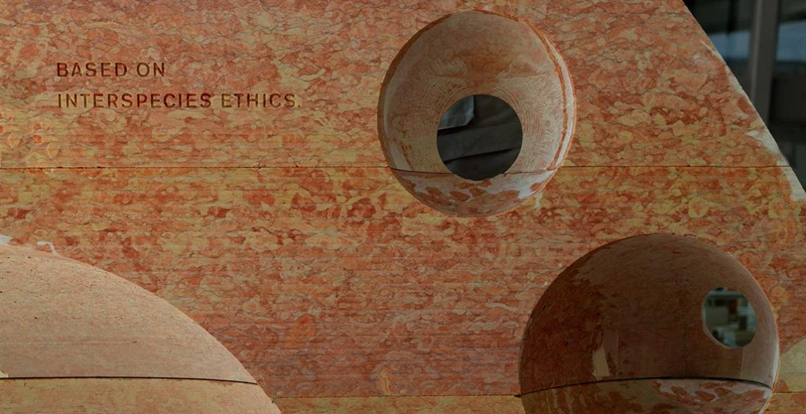

Visualisation of Interspecies Assembly in Central Park, SUPERFLEX, 2021. Interspecies Assembly by SUPERFLEX for ART 2030 is generously supported by New Carlsberg Foundation, The Obel Family Foundation, Beckett Fonden and the Danish Arts Foundation. Interspecies Assembly was developed in close collaboration with KWY.studio. Interspecies Assembly is part of Interspecies Assembly by SUPERFLEX for ART 2030. Visualisation by SUPERFLEX, courtesy of the artists.
SOURCE: ART 2030
Interspecies Assembly
21-24 Sept, 2021
SUPERFLEX
Situated under the protected Elm trees by Central Park’s Naumburg Bandshell, in the midst of Manhattan’s largest green space also home to an array of flora and fauna: turtles, ducks, chipmunks, fish, as well as over 230 species of birds and many thousands of trees, SUPERFLEX invites all species to gather at the sculptural installation Interspecies Assembly.
As a physical gathering site to nurture dialogue between species, Interspecies Assembly demarcates a space in which humans must temporarily slow down and actively listen to their co-species.
The architecture of the artwork arises from SUPERFLEX’s ongoing investigation into interspecies living. Exploring the shift towards a more symbiotic relationship with other species, the gathering site responds to sea-level rise across our planet. The pink coral sculptures incorporate the textures, colors, and forms that will best support a thriving and biodiverse aquatic life in a possible underwater future, while the arrangement of the sculptures in a broken circle evokes the feeling of circularity without the comforting completeness of a ring, implying the need for both consensus and disagreement. The Interspecies Assembly is a porous meeting place where visitors of all species can enter and exit from any direction.
Explore More
Artwork Vertical Migration, part of Interspecies Assembly by SUPERFLEX for ART 2030
Sculptural and Participatory Installation in North Naumburg Bandshell, Central Park.
All Day, September 21-24, 2021.
SOURCE: ART 2030
